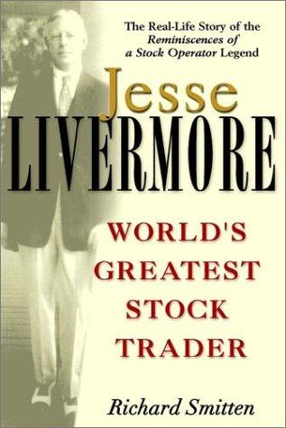

理查德·斯密腾（Richard Smitten）是一名职业作家兼交易者，本科毕业于加拿大西安大略大学英语系。他这本传记最初以《The Amazing Life of Jesse Livermore, World's Greatest Stock Trader》为名由Traders Press于1999年出版，后经Wiley在2001年以《Jesse Livermore: World's Greatest Stock Trader》为题再版，是较早以真实姓名系统讲述利弗莫尔生平的长篇传记之一——在此之前，许多读者主要通过埃德温·勒费弗尔（Edwin Lefèvre）1923年那部以他为原型的半虚构小说《股票作手回忆录》认识利弗莫尔。为写这本书，斯密腾采访了利弗莫尔的家人，并查阅私人文件、报纸记录与利弗莫尔本人的文字；作者也在前言中说明，部分对话根据家人口述进行了文学性重构。中文版《杰西·利弗莫尔疯狂的一生》由高海嵘翻译、山西人民出版社于2013年出版，全书共十六章，末尾附录了利弗莫尔的交易手册与法则整理。
书中按时间线索铺陈了利弗莫尔跌宕的一生：1877年出生于马萨诸塞州什鲁斯伯里的贫困农家，十四岁被父亲从学校拉去种地，他随即离家出走，到波士顿一家经纪行当"报价板男孩"，每周挣5美元。很快他发现自己能靠记忆股价规律在"桶店"——一种只对赌股价涨跌、不经交易所实际成交的地下投机场所——里稳定赢钱，十六岁时每周能赚到约200美元，人称"男孩投机客"（Boy Plunger），二十岁前积累下约一万美元的战绩，最终因赢得太多被波士顿各家桶店联手拒之门外。书中详述了1907年恐慌期间，利弗莫尔靠做空一天之内赚进约100万美元，而当时正在亲自组织救市的J.P.摩根竟托人捎话，请他停止抛空，利弗莫尔从命平仓、转而做多，反而在随后的反弹中获利，个人资产一度冲到300万美元——这一幕后来也成为他"传奇"形象的开端。1929年大崩盘前，他重仓布局空头，一度浮亏达600万美元，但最终在市场崩溃时净赚约1亿美元，却也因此被舆论指为"做空国难财"的罪魁，收到过死亡威胁。
斯密腾并未回避利弗莫尔一生的破产与破碎：他先后于1901年、1915年、1934年三次宣告破产，1934年那次名下仅剩8.4万美元资产却背负250万美元债务；婚姻同样波折不断，第二任妻子多萝西酗酒且行为失控，第三任妻子哈丽雅特（他昵称她"Nina"）此前的几任丈夫中已有两人自杀身亡。1940年11月28日感恩节这天，63岁的利弗莫尔在纽约谢里-荷兰酒店（Sherry-Netherland Hotel）衣帽间的凳子上举枪自尽，留下一封八页的手写遗书，开头写道："我亲爱的尼娜：没办法了。事情一直很糟。我已经厌倦了抗争。"（My dear Nina: Can't help it. Things have been bad with me. I am tired of fighting. Can't carry on any longer.）斯密腾在书中把这一结局与利弗莫尔生前反复告诫他人、自己却在晚年屡屡违背的交易纪律并置——止损、不满仓、不与市场对抗——让传记的最后几章带上明显的悲剧色彩。
这本书在结构上把交易智慧嵌入具体的人生场景中呈现：华尔街的做空规则、"利弗莫尔市场关键"记录法、他对消息与内幕小道的警惕，都不是抽象的条文，而是伴随某一次具体的暴富或破产出现。它与利弗莫尔本人所著的《股票大作手操盘术》互为参照——后者讲"该怎么做"，这本传记讲"他真实地怎么做、以及为什么最终没能做到"。对于把利弗莫尔当作交易者研究的读者而言，这本书补上的正是《股票作手回忆录》那部小说化叙事所省略的部分：真实姓名、真实数字、真实的婚姻与枪声，以及一个反复证明规则有效、却始终无法长期遵守自己规则的人。